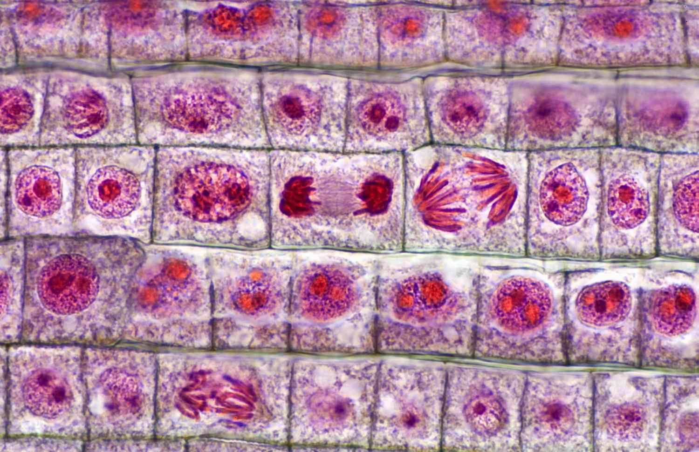
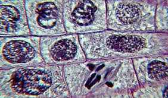
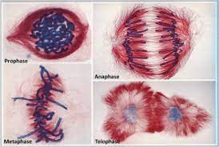
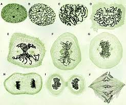
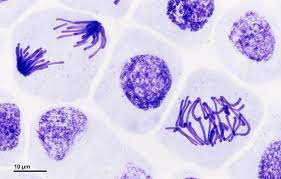
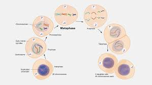

Proiect la materia "Biologie"
Mitoza este un proces de diviziune celulară care are loc în celulele somatice (celulele care alcătuiesc majoritatea țesuturilor corpului)
și servește la creștere, înlocuirea celulelor uzate și repararea țesuturilor. Mitoza are patru etape principale: profaza, metafaza, anafaza
și telofaza .Mitoza asigură păstrarea numărului corect de cromozomi în celulele fiice și este un proces esențial pentru dezvoltare, creștere
și întreținerea organismelor multicelulare.